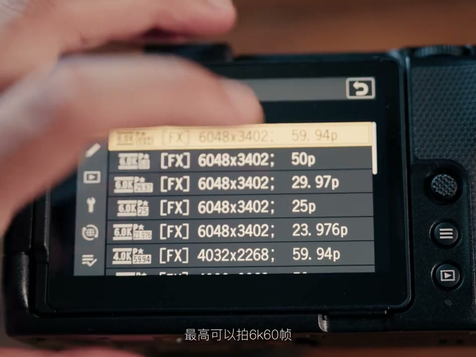

内容要点
[00:00] 有一个词可以在接下来五分钟里
[00:02] 让你从浅到深离的视频创作
[00:04] 这个词就是
[00:06] 什么联系
[00:07] 画面之间的联系
[00:09] 在具体点你可以添充无数字彙
[00:11] 比如视觉焦点的联系
[00:13] 无关地图画面
[00:14] 只要都迎到你看像同一个地方
[00:17] 这个场上舒适的观感
[00:22] 那再看这一段
[00:27] 是不是就感觉有点眼花了
[00:29] 因为你的视觉焦点就是你第一眼注意的位置
[00:32] 一直在发生变化
[00:34] 让我们重新排列一下
[00:43] 其实刚刚这一段也包含了一些其他的联系
[00:45] 比如动式
[00:48] 或者说动作的联系
[00:56] 这应该是你们最熟悉的
[00:58] 这些Vlog非常实用的换人
[01:02] 换场景
[01:05] 换衣服
[01:11] 底层原理都是动式的联系
[01:14] Juice类的联系还有很多
[01:16] 比如颜色
[01:17] 可以是不同的画面都包含相同的颜色
[01:19] 也可以让整段画面在同一个色调里
[01:24] 还有什么
[01:25] 形状也有联系
[01:27] 其实都是老生常谈的东西
[01:28] 但总之目前为止
[01:30] 你应该已经告别的间接毫无头绪
[01:33] 在下一个画面放什么这个问题上
[01:35] 联系就变成你的抓手
[01:37] 这个抓手也可以帮助你反推脚本和拍摄
[01:40] 在写和拍的时候就想好找联系
[01:42] 整个创作过程便不在意团乱了
[01:46] 前面的一切只做到让视觉更舒适
[01:49] 仅仅只是开始
[01:50] 在进一步进阶之前
[01:52] 先来猜猜这组画面
[01:55] 包含了什么联系
[01:58] 尼康作为甲方和我的联系
[02:00] 所以你可能没看仔细
[02:01] 看这里
[02:02] R-E-D
[02:03] Red
[02:05] 收购与被收购的联系
[02:07] 那这种联系和画面又有什么联系
[02:09] 我们现在终于在这样体积的自动图交微单上
[02:12] 用我的原汁原味的Red彩可学
[02:14] 你可以直接拍摄Red的LOG
[02:16] 还原Red的色彩
[02:18] 以及直接用上那些针对Red的风格LOT
[02:20] 在视频规格上
[02:22] 这台尼康ZR也是几乎点满
[02:24] 最高可以拍6K60帧
[02:25] 可以拍N若拥有12bit的色身
[02:28] 并且使用这块
[02:29] 如此巨大系列的4英寸屏幕监看
[02:32] 这个屏幕真的大得太夸张了
[02:34] 而且户外白天也完全够亮
[02:36] 到了晚上
[02:37] 它又有第二档6400的原生ISO
[02:39] 光是这几项
[02:40] 你要看构图
[02:41] 你要做一些裁切
[02:42] 你要挑出颜色的联系
[02:44] 用这台机器完成
[02:45] 都会无比简单
[02:46] DAM
[02:48] DAM
[02:50] 当然坏了
[02:52] 恭喜你
[02:53] 进阶到声音的联系
[02:55] 除了像刚才这样手尾音重叠之外
[02:57] 我们还可以让两个画面
[02:59] 在音效上产生一些微妙的关联
[03:09] 还可以这样
[03:17] 音乐和画面之间联系也很重要
[03:20] 像这样的慢动作和现在的音乐
[03:22] 就配合得很舒适
[03:24] 舒适啊
[03:25] 能拍4K120帧
[03:26] 真的太舒适了
[03:33] 歌词和台词
[03:34] 也可以有声音上的联系
[03:36] 而且现在
[03:48] 如果说前面的部分
[03:49] 都只举现在技术的层面
[03:50] 接下来
[03:51] 我们就将进入思路的世界
[03:53] 也就是画面之间的联系
[03:55] 能不能产生新的表达
[03:57] 举个最简单的例子
[03:58] 比如前一个画面是一个树
[04:00] 后面如果是
[04:03] 可能就产生不了什么联想
[04:05] 但是我还是那个树
[04:07] 接下来后面的变成
[04:11] 你的脑中是不是
[04:12] 就会有一些词汇产生
[04:14] 这只是非常粗暴的例子
[04:15] 关键还是是否服务你的故事
[04:17] 比如两个人在吵架
[04:19] 可以就停在这里
[04:21] 那如果再加一个这样的画面
[04:43] 包括音乐也是一样的
[04:44] 有的歌词画面
[04:45] 就是能产生
[04:46] 1加1大于2的效果
[04:48] 到这里听起来好像很复杂
[04:50] 其实反而可以让你的思路更清晰
[04:52] 因为如果只关注视觉和声音
[04:54] 是否舒适
[04:55] 能产生的排列组会是无限多的
[04:57] 但加上表艺这一场
[04:59] 能选择的可能就是那一个画面
[05:01] 和一首歌
[05:06] 现在你的脑子里
[05:07] 应该密密麻麻写满的前面
[05:08] 关于联系的所有公式
[05:10] 现在你要做的
[05:11] 就是把它彻底撕碎
[05:12] 狠狠扔进垃圾桶里
[05:16] 从来都不需要严丝和缝
[05:19] 要表现被潮洒的意见淹没
[05:21] 不一定如此
[05:22] 也可以是镇耳欲聋的缠绵
[05:24] 要表达自己已经实在进程了
[05:26] 变得无用
[05:26] 未必如此直感
[05:28] 也可以是一座铺族的电话铁人
[05:30] 如果你看过约翰·威尔逊
[05:31] 应该就能铁会最迷人的
[05:33] 变成若有若无的联系
[05:35] 所以出门吧
[05:36] 拿着这台裸机支540克的相机出门吧
[05:39] 拍下铃铸的新大型
[05:40] 拍下一场街头惨案
[05:42] 或者一段远古遗迹
[05:44] 不用纠结到底用在哪里
[05:45] 此刻拍到的片段
[05:46] 可能五年之后
[05:47] 才找到和它完美联系的故事
[05:49] 而在你寻找联系的过程中
[05:51] 这台相机可以一直陪伴着你
[05:53] 因为它诚意满满的参数
[05:55] 在未来很长时间都不会过时
[05:57] 看到这里
[05:58] 恭喜你
[05:59] 已经领略视频充作10%的魅力
[06:02] 剩下90%只能靠你自己
[06:05] 那是你与世界的联系

